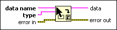

Get Drag Drop Data Function
Owning Palette: Application Control VIs and Functions
Requires: Base Development System
Returns drag data from the current drag and drop operation. Only use this function when it is necessary to access the drag data, not just to examine the data type. If a drag and drop operation is not in progress, LabVIEW returns an error. If the data requested is unavailable, LabVIEW returns an error.

 Add to the block diagram Add to the block diagram |
 Find on the palette Find on the palette |